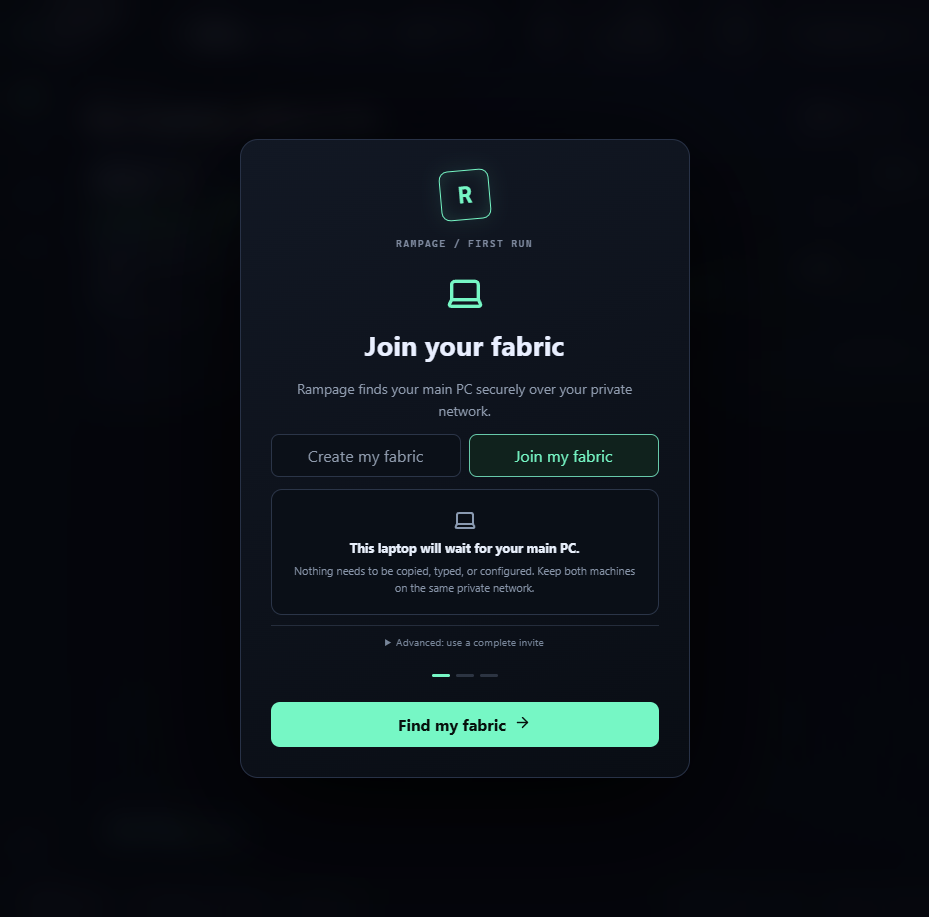
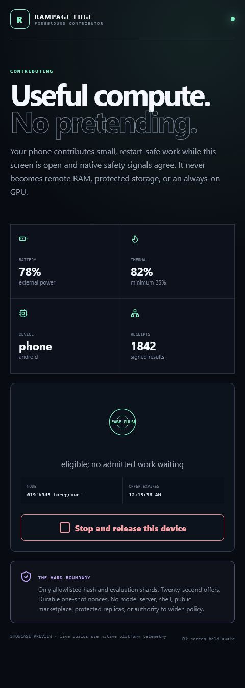

Pool useful work
Move complete jobs to the right machine. Split independent evaluation, search, preprocessing, and rendering into atomic shard sets.
FABRIC LIVE · OWNER CONTROLLED
Rampage turns the computers and edge devices you already own into a private compute fabric, qualifies local AI automatically, serves it through OpenAI, Anthropic, or OpenRouter-style clients, and proves useful capacity with signed execution receipts.
Unsigned Windows x64 release candidate · SHA-256 hashes published
THE FABRIC ARENA
A spatial live view for intuition. A keyboard and screen-reader-friendly Ops Grid for precision. Both are projections of the same evidence-backed state.

THE SHIFT
Move complete jobs to the right machine. Split independent evaluation, search, preprocessing, and rendering into atomic shard sets.
CPU, VRAM, RAM, storage, runtime, thermal, and power capacity become scoped capabilities—not permanent ambient permission.
Donated drives become encrypted content-addressed capacity with restart-resumable frames, signed possession challenges, and bounded autonomous repair.
Every accepted job returns a signed result. Every transition lands in a recoverable, hash-chained evidence ledger.
NATIVE FROM FIRST CLICK
Rampage is a real desktop application, not a dashboard wrapped around a pile of manual daemons. The shell owns its governed sidecars, local discovery, tray lifecycle, startup behavior, STOP path, and clean shutdown.
The installer creates the desktop launcher, bundles the governed services, qualifies a pinned local AI runtime, and hands ongoing control to the role-aware system tray.
The same Tauri shell and Rust/Python sidecars are assembled on Ubuntu 24.04, staged with SHA-256 checksums, and bound to the exact source revision in a distribution manifest.
Apple Silicon candidates are built natively on macOS 15. Stable publication additionally requires a real Developer ID, notarization, Gatekeeper acceptance, and a stapled ticket.

Windows 10 remains an explicit real-machine gate: the dedicated self-hosted workflow must prove the operating-system caption, installer, desktop launcher, tray lifecycle, sidecars, restart behavior, STOP, and uninstall. A Windows Server build is useful candidate evidence; it is not relabeled as Windows 10 proof.
RAMPAGE EDGE
Phones and tablets do not become network VRAM. They become native, owner-controlled contributors for small work that is safe to interrupt and retry—freeing expensive machines for the workloads only they can run.
Exact source allowlist: CPU hashing and independent evaluation shards. No model server, shell, protected storage, public marketplace, background daemon, console package, or policy-widening authority.
Inspect the mobile trust contract Read the qualified build evidence
DESIGN GRAPH
Rampage has a narrow waist: the signed capability lease. Everything smart can improve above it. Everything powerful can diversify below it. Neither side can wish policy away.
COMPUTE STRATEGY
The new strategy plane previews exactly how compatible memory and measured links should be used—without turning a placement guess into execution authority.
Combine qualified compatible model memory to fit an LLM no single machine can hold.
Use tensor peers only when topology predicts faster tokens. Otherwise, stay on the fastest node.
Place whole-model replicas for simultaneous users, agents, and batched work.
Choose the smallest qualified fit and preserve energy, thermals, and responsiveness.
Adapt from signed evidence inside an owner envelope; reject authority expansion automatically.

The planner stays read-only. The separate whole-model lane serves OpenAI, Anthropic Messages, and OpenRouter-style text requests through an exact one-shot lease, authenticated QUIC, local Ollama, and a signed transcript receipt. Cross-host tensor and pipeline launch remain fenced.
ONEPOOL
Every contributor advertises an operation-exact signed capability contract. Old PCs can run complete jobs, shards, replicas, builds, renders, transcodes, simulations, cache, and storage when a shipped adapter proves it. A phone is not a pretend data-center GPU: today the native source allows only CPU hashing and independent evaluation shards when foreground, thermal, battery, identity, and restart policy all agree. Every additional adapter must earn its own proof.
UNIVERSAL, WITHOUT THE FICTION
Rampage does not claim that a network turns every remote byte into local RAM or VRAM. It standardizes identity, admission, placement, recovery, evidence, and STOP—then lets operation-specific adapters move work at the boundary that actually scales.
Discover installed Ollama models, select an exact worker, and serve bounded text through OpenAI, Anthropic Messages, or OpenRouter-style clients.
Scatter independent research, evaluation, preprocessing, and transformation work across eligible machines, then recover against an explicit success threshold.
Place builds, renders, transcodes, simulations, and batch stages near the compute or data they need—only when a shipped adapter proves the exact operation.
Keep the gaming PC responsive by moving eligible background AI, compilation, capture processing, conversion, cache, or server-simulation work elsewhere.
Contribute hashing and independent evaluation shards only while native battery, thermal, low-power, foreground, identity, and restart policy agree.
Turn owner-controlled drives into encrypted content-addressed capacity that resumes after interruption and proves possession before it counts.
RECURSIVE INTELLIGENCE
Rampage continuously scans routes, links, failures, denials, thermals, battery, idle capacity, capability gaps, and storage replication. It can propose mutations, challenge them, replay them, and autonomously earn a bounded canary without a per-change prompt. Anything outside the owner envelope is denied.
NOT VAPORWARE
The Governor signs only checked minimum resources. Workers persist consumed nonces and the highest authority epoch across restart.
A complete set is planned against one reservation book and admitted all-or-nothing, with explicit success thresholds.
Signed peers use direct QUIC when possible. Hard NAT falls back only to the bundled owner relay, with a fresh Governor-signed allowlist and resource caps—never a silent public fleet.
Flushed 4 MiB sessions resume after restart, quarantine objective corruption, and repair protected data to two independent workers.
Workers sign job results and full-content possession challenges; rotating proof budgets keep autonomous verification bounded.
Native STOP latches immediately and reconciles to a hash-chained epoch—even if a crash interrupts propagation.
The relay proof turns off every direct IP transport on both test peers, leaving the owner service as the only possible route. The storage proof interrupts a two-frame transfer, resumes it after a gateway and CAS restart, then repairs one protected artifact across two independently keyed workers. The honest boundary: public-WAN, every-NAT, and physical disk-loss qualification still require separate campaigns.
RAMPAGE 0.2
Make them act as one. Make every unit of authority prove where it came from.
Trusted-circle release · public source inspection · proprietary license · unsigned binaries